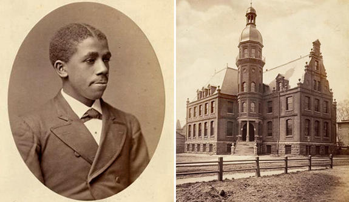

PLACING RACE AND GENDER IN PHYSICS
For my senior thesis in African American studies, advised by Dr. Hazel Carby, I set out to critically analyze the culture and theory of physics and astronomy through the perspective of Black women in an effort to understand the effects of a racist-sexist society upon scientific ways of knowing. I focus specifically on the stakes and implications of patriarchal white supremacy on the content of physics knowledge. Ultimately, I present evidence for a deeply sexist-racist physics epistemology as I examine the entanglement between race, gender, and physics.READ IT

BLACK PHYSICISTS AT YALE
As part of the founding cohort of the History Keepers Project, advised by Dean Risë Nelson and housed in the Afro-American Cultural Center, I researched the history of Black physicists at Yale. Edward Bouchet is widely known for being the first African American to recieve a PhD from any university, graduating from Yale in physics in 1876. However, my project aimed to collect information about the other Black physics and astronomy students that have passed through the university in the subsequent 140 years (as of 2018, there have been 11), raising awareness of the long - if sparse - legacy of Black excellence that exists at Yale's physics and astronomy departments.READ IT